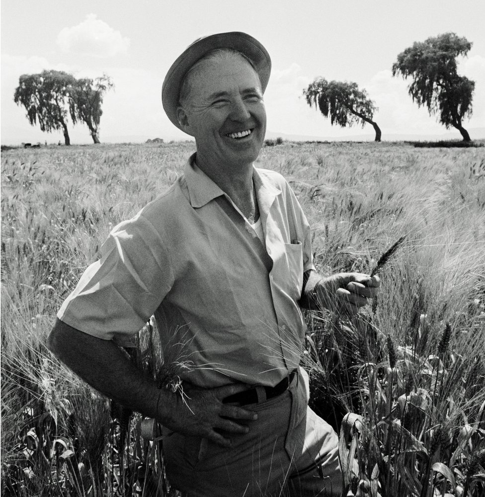

Dr.Norman Borlaug
the man who saved a billion lives

here's a time line of Dr.Borlaugs life
- 1994 -Born in cresco,lowa
- 1933-leaves his family farm to attend the university of minnesota,thanks to Drepression era program known as the "national youth admission"
- 1935-has to stop school and save up some money .works in the civilian corps,helping starving Americans."i saw how food changed threm"he said .All of this left scars me ."
- 1937- finishes university and takes a job in the US forestry service
- -marries wife of 69 years Margret Gibson.gets laid off due to budget cuts.inspired by Elvin Charles Stakman he returns to school study under stackman,who teaches him about breeding pest-resistent plants.
- 1941-tries to enroll into the military after the pearl harbor attack , but is rejected .instead ,the military asked his lab to work on water proof glue ,DDT to control malaria ,disinfectants ,and other applied science.
- 1942-Recieves a ph.D in geneticsw and plant pathology
- 944-rejects a 100 salary increase from dupont. leaves behind his pregnant wife , and flies to mexico to head a new plant pathology program over the next 16 years , his team breeds 6,000different strains of disease resistant wheat-includingdifferent varieties for each major climate on Earth.
- 1945- Discovers a way to grown wheat twice each season, doubling wheat yields
- 1953-crosses a short, sturdy dwarf bread of wheatwith a high-yielding American breeed, creating a strain that respons well to fertilizer. it gies on to provoide 95 of mexicos wheat
- 1962-visits Delhi and brings his high- yielding strains of wheat to the indian subcontinent in time to rapidly expanding population
- 1970-recieves a noble peace price
- 1983-helpsseven African countries dramatically their maize and sorghun yields
- 1984-become a distinguished professor at Texas AandM university
- 2005-states "we will have to double the world food supply by 2050."Argues that genetically modified crops are the only way we can meet the demand ,as we run out of arable land .says that GM crops are not inherently dangerous because, weve genetically modifying plants and animals for a very ling time .long ago before we call it science,people were selecting the best breeds ."
- 2009-dies and at the age of 95